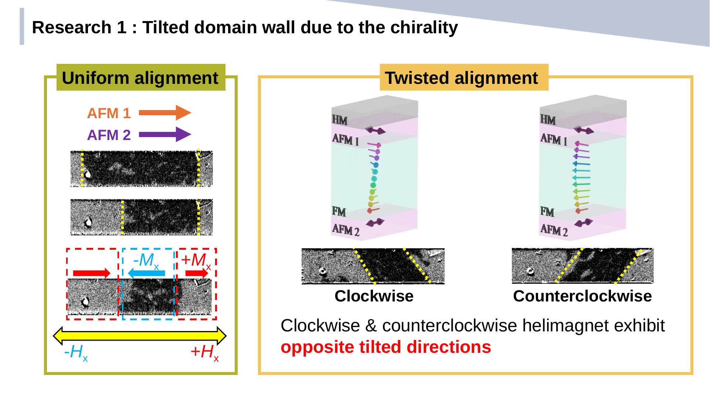

01

Published · APL Materials 2023
90° helical spin alignment
Created artificial helical spin structures in AFM/FM/AFM trilayers through spin-orbit-torque control of exchange bias, then electrically selected chirality and tracked its effect on domain-wall dynamics.